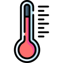
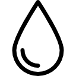

°C
météo
Auvergne-Rhônes-Alpes
météo instantané - mardi 21 juin 2022 - 11h

Ressenti
°C

Humidité
%
Vent -
km/h

Visibilité
km
lever du soleil / coucher du soleil
Lever du soleil
Coucher du soleil
lever de la lune / coucher de la lune

Lever de la Lune
:
Coucher de la lune
:
Phase de lune
polution de l'air à
Bon
Concentration de monoxyde de carbone :
Concentration de monoxyde d'azote :
Concentration de dioxyde d'azote :
Concentration d'ozone :
Concentration de dioxyde de soufre :
Concentration de particule fine :
Concentration de particule :
Concentration d'ammoniac :